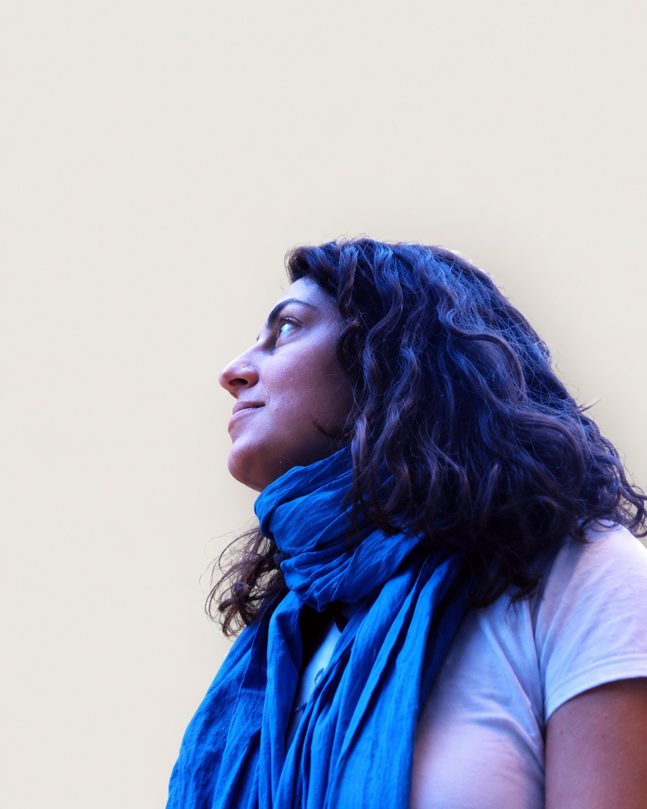

Sobre mí About

Biografía Biography
Ana Martínez (Córdoba, 1970) es pintora y muralista. Vive y trabaja en España.
Ana Martínez (Córdoba, 1970) is a painter and muralist. She lives and works in Spain.
CV ↗ES
Licenciada en Bellas Artes por la Universidad Complutense de Madrid, 1996, amplía sus estudios en la Gerrit Rietveld Academie de Amsterdam, 1997.
Ha realizado exposiciones individuales y colectivas dentro y fuera de España.
A principio de los 90 participa en “Punto de partida”, taller impartido por Soledad Sevilla y Chema Alvargonzález en el CAAC, Sevilla. En esa década, también participó con la X edición de Circuitos de arte de la Comunidad de Madrid en una exposición itinerante del Instituto Cervantes, en ciudades como Roma, Milán, Nápoles, Madrid o París.
Ha recibido ayudas a la creación de la Comunidad de Madrid, de la Diputación de Córdoba, de la Fundación Botí, Córdoba, de la Junta de Andalucía y de la Junta de Castilla y León para la realización de proyectos artísticos.
También participó en la II edición de Arte de Mujeres del Instituto Andaluz de la Mujer, promovida por Carmen Alborch, con una exposición itinerante por Málaga, Granada y Sevilla.
Ha impartido cursos del INEM para la formación e inclusión en el mundo laboral de mujeres desempleadas. Coín, Málaga.
Ha realizado talleres artísticos tanto en España como en Reino Unido, de temática variada para un amplio rango de edades.
Ha participado en numerosas exposiciones colectivas en España y en distintos países europeos, principalmente en Reino Unido.
Ha realizado exposiciones individuales en Galería Carmen del Campo, Córdoba, Sala Reyes Católicos de la Fundación Cajasur, Córdoba. Sala Triángulo, Madrid. Sala de la asociación cultural La voz de mi madre, Salamanca. Iglesia de la Magdalena y Palacio de Viana, ambas de la Fundación Cajasur, Córdoba. Sala Limbo 0, Córdoba. Sala Galatea de la Casa Góngora, del Ayuntamiento de Córdoba, sede de la Fundación Rafael Botí, Córdoba. En la Fundación José Luis García Palacios de la Caja Rural del Sur, Sevilla, y también en la misma Fundación, en su sala de exposiciones de Córdoba.
Ha sido miembro del jurado del I Certamen de Pintura y Escultura ‘Alfonso Aramburu’ de la Fundación Caja Rural del Sur, 2026.
EN
She graduated in Fine Arts from the Universidad Complutense de Madrid in 1996 and continued her studies at the Gerrit Rietveld Academie in Amsterdam in 1997.
She has held solo and group exhibitions in Spain and abroad.
In the early nineties she took part in “Punto de partida”, a workshop led by Soledad Sevilla and Chema Alvargonzález at the CAAC in Seville. In the same decade she was selected for the 10th edition of Circuitos, the Comunidad de Madrid art programme, in a touring exhibition with the Instituto Cervantes in cities such as Rome, Milan, Naples, Madrid and Paris.
She has received creation grants for artistic projects from the Comunidad de Madrid, the Diputación de Córdoba, the Fundación Botí in Córdoba, the Junta de Andalucía and the Junta de Castilla y León.
She also took part in the 2nd edition of Arte de Mujeres of the Instituto Andaluz de la Mujer, promoted by Carmen Alborch, with a touring exhibition in Málaga, Granada and Seville.
She has taught INEM courses for the training and employment of unemployed women in Coín, Málaga.
She has led art workshops in Spain and the United Kingdom on a wide range of subjects and for all ages.
She has taken part in numerous group exhibitions in Spain and other European countries, mainly in the United Kingdom.
Her solo exhibitions include Galería Carmen del Campo, Córdoba; Sala Reyes Católicos of the Fundación Cajasur, Córdoba; Sala Triángulo, Madrid; the La voz de mi madre cultural association, Salamanca; the Iglesia de la Magdalena and the Palacio de Viana, both of the Fundación Cajasur, Córdoba; Sala Limbo 0, Córdoba; Sala Galatea at Casa Góngora, Córdoba City Council, home of the Fundación Rafael Botí; and the Fundación José Luis García Palacios of Caja Rural del Sur, both in Seville and in its exhibition space in Córdoba.
In 2026 she sat on the jury of the 1st ‘Alfonso Aramburu’ Painting and Sculpture Competition of the Fundación Caja Rural del Sur.